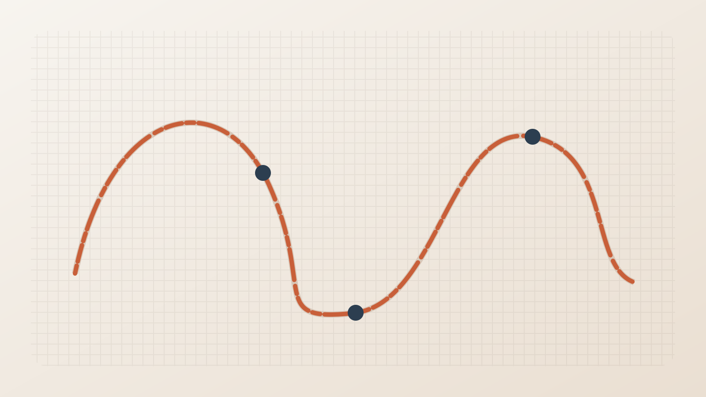

← Back to Portfolio
Research Project · Embroidery
Stitch Barcode
任意の一本線SVGを異なる長さのステッチで再サンプリングし、刺繍された線の中にバイナリ情報と経路情報を埋め込む手法です。

Physical Representation
| Symbol | Stitch length | Role |
|---|---|---|
| 0 | 1.2 mm | Binary data |
| 1 | 2.4 mm | Binary data |
| M | 4.5–7.2 mm | Marker |
開始マーカー 0-M-1 が読み取り方向を示し、交差部ではcross-skipパターンが経路を定義します。
Encoding
- 情報をバイナリ列に変換する。
- 一本線SVGをビットに対応するステッチ長で再サンプリングする。
- 開始マーカーと交差部のcross-skipを挿入する。
- Singer Quantum Futura CE-200で刺繍する。
Decoding
- 刺繍画像をHSV色空間でセグメンテーションする。
- 各ステッチの長さを測定し、K-meansと閾値処理で0・1・マーカーを分類する。
- 端点間の接続、開始マーカー、cross-skipを使って読み取り順を復元する。
- ステッチ列をバイナリデータへ戻す。